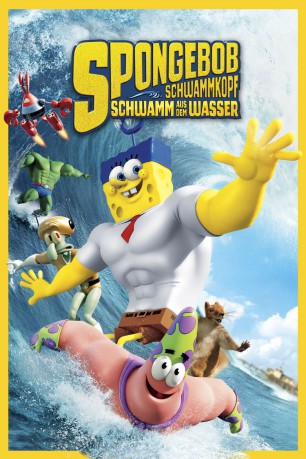

#6829 SpongeBob Schwammkopf - Schwamm aus dem Wasser
Alternativ: The SpongeBob Movie: Sponge Out of Water
 
 IMDB-Wertung: 6.0 / 10
IMDB-Wertung: 6.0 / 10  Metascore: 0
Metascore: 0 
Als der fiese Pirat Burger Beard Mr. Krabs' Geheimrezept für den allseits beliebten Krabbenburger stiehlt, stürzt er damit die gesamte Unterwasser-Stadt Bikini Bottom ins Chaos. Das wollen deren Bewohner natürlich nicht auf sich sitzen lassen. Und so begeben sich SpongeBob und seine Freunde Patrick, Sandy, Thaddäus und Mr. Krabs in die Welt der Menschen, um Burger Beard mit vereinten Kräften das Handwerk zu legen. Doch auch SpongeBobs Erzfeind Plankton will die Gelegenheit nutzen, um an das Rezept zu kommen. Während sie sich noch in der ihnen fremden Welt zurechtfinden müssen, wecken sie bald erstaunliche Kräfte in sich, mit denen sie Burger Beard und seiner finsteren Crew entschlossen entgegentreten.
Jahr: 2015
Dauer: 92 Minuten
FSK: 0
Land: USA Studio: Paramount PicturesTonspuren: DD5.1 - ,
Untertitel: Deutsch,
Auflösung: 1080p (1920x1080) Größe: 5068 MB
Genre: Komödie, Abenteuer, Fantasy, Animation/Trick, Familie
Regisseur: Paul Tibbitt, Mike Mitchell
Drehbuch: Alexander Adolph
Soundtrack:
Darsteller:
 Antonio Banderas als Burger Beard
Antonio Banderas als Burger Beard Tim Conway als Seagull
Tim Conway als Seagull- Eddie Deezen als Seagull
 Rob Paulsen als Seagull
Rob Paulsen als Seagull Kevin Michael Richardson als Seagull
Kevin Michael Richardson als Seagull- April Stewart als Seagull
- Cree Summer als Seagull
 Billy West als Seagull
Billy West als Seagull Carlos Alazraqui als Seagull / Dead Parrot
Carlos Alazraqui als Seagull / Dead Parrot Nolan North als Seagull / Dead Parrot / Pigeon Cabbie
Nolan North als Seagull / Dead Parrot / Pigeon Cabbie- Paul Tibbitt als Kyle / Helpful Angry Mob Member
 Tom Kenny als SpongeBob / Gary / Agreeable Mob Member / Waffle
Tom Kenny als SpongeBob / Gary / Agreeable Mob Member / Waffle Bill Fagerbakke als Patrick / Male Fish / Eager Customer
Bill Fagerbakke als Patrick / Male Fish / Eager Customer Rodger Bumpass als Doctor / Squidward / Angry Mob Member #2 / Doughnut / Squidasaurus Rex
Rodger Bumpass als Doctor / Squidward / Angry Mob Member #2 / Doughnut / Squidasaurus Rex Mr. Lawrence als Plankton / Plankton Robot / News Anchor Fish / Mob Member
Mr. Lawrence als Plankton / Plankton Robot / News Anchor Fish / Mob Member Jill Talley als Karen, the Computer Wife / Harold's Wife / Ice Cream Cone #2
Jill Talley als Karen, the Computer Wife / Harold's Wife / Ice Cream Cone #2 Dee Bradley Baker als Sandals / Customer #1 / Fish on Bubble / Perch Perkins / Angry Fish / Maple Syrup Jar / Waffle / Ice Cream Cone #1 / Furballs / Giant Cute Kitty / Rainbow / Spotlight Guard / Angry Guard #1 / Tough Mob Member
Dee Bradley Baker als Sandals / Customer #1 / Fish on Bubble / Perch Perkins / Angry Fish / Maple Syrup Jar / Waffle / Ice Cream Cone #1 / Furballs / Giant Cute Kitty / Rainbow / Spotlight Guard / Angry Guard #1 / Tough Mob Member Clancy Brown als Mr. Krabs
Clancy Brown als Mr. Krabs Carolyn Lawrence als Sandy
Carolyn Lawrence als Sandy Sirena Irwin als Computer Voice / Shocked Mob Member
Sirena Irwin als Computer Voice / Shocked Mob Member Mary Jo Catlett als Mrs. Puff
Mary Jo Catlett als Mrs. Puff Mark Fite als Customer #2
Mark Fite als Customer #2 Thomas F. Wilson als Angry Customer #1
Thomas F. Wilson als Angry Customer #1 Riki Lindhome als Popsicle
Riki Lindhome als Popsicle Kate Micucci als Popsicle
Kate Micucci als Popsicle Matt Berry als Bubbles
Matt Berry als Bubbles- Lillian Ellen Jones als Sandcastle Girl
- Brody Rose als Kicking Boy
- Noah Lomax als Mikey
- Nina Repeta als Woman with Stroller
- Chip Lane als Customer
- Brick Jackson als Customer
- Keller Moore als Older Boy Customer
- Bailey Campbell als Boy Customer #2
- Nicolette Noble als Surfer Girl with Cone
- Kari Klinkenborg als Woman on Sidewalk #1
- Lisa Datz als Amy
- Dane Northcutt als Nut Vendor Customer
- Meredith Jackson als Mother with Cone
 Mike Benitez als Nut Vendor
Mike Benitez als Nut Vendor- Kron Moore als Woman on Sidewalk
- Eamon Sheehan als Young Father
- Ashley Nicole Hudson als ND Beach Goer
- Amy Lynn Tuttle als ND Beach Goer
 Marian Green als ND Beach Goer
Marian Green als ND Beach Goer- Jake Kilfoyle als ND Beach Goer
- Dean Neistat als ND Beach Goer
- Ashley Siloac als Beach Goer
 Stephen Hillenburg als Baby in Stroller
Stephen Hillenburg als Baby in Stroller Lori Alan als Pearl
Lori Alan als Pearl
Datei: X:\Kinder Collections\SpongeBob Schwammkopf\SpongeBob Schwammkopf - Schwamm aus dem Wasser (2015, FSK0, 1920x1080).mkv seit 30.08.2017
Festplatte: Kinder-Filme+Trick
 Es gibt insgesamt 23 Filme in der Gruppe 'Kinder Collections\SpongeBob Schwammkopf'
Es gibt insgesamt 23 Filme in der Gruppe 'Kinder Collections\SpongeBob Schwammkopf'